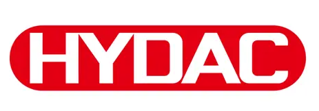

Xuất xứ: Đức
HYDAC là tập đoàn Đức chuyên về công nghệ thủy lực và quản lý chất lỏng — đặc biệt mạnh ở lọc dầu thủy lực, lõi lọc thay thế, bình tích áp, cảm biến và phụ kiện đường ống. Lõi lọc HYDAC có mặt trên hầu hết máy ép, máy cán thép, trạm thủy lực turbine và thiết bị nâng hạ nhập khẩu tại Việt Nam.
Fast Group là đại lý phân phối hàng HYDAC chính hãng — cung cấp lõi lọc, cụm lọc, bình tích áp, cảm biến và phụ kiện HYDAC cho bảo trì nhà máy lẫn dự án mới, kèm chứng từ nguồn gốc rõ ràng.
Với HYDAC, đúng mã là tất cả: một lõi lọc khác nhau ở cỡ, cấp lọc, vật liệu và gioăng có thể trông giống hệt nhau. Fast Group giải mã part number trên nhãn cũ trước khi báo giá để lõi thay thế lắp vừa và lọc đúng cấp.
Fast Group vận hành catalog kỹ thuật HYDAC trên hydraulic.com.vn với 82 nhóm sản phẩm và hơn 20.000 mã đang sản xuất — tra theo part number, xem thông số và tài liệu trước khi gửi RFQ.
Chỉ có mã in trên lõi lọc cũ? Nhập vào công cụ tra mã thiết bị thủy lực để kiểm tra mã còn sản xuất hay đã có mã thay thế.
HYDAC được thành lập năm 1963 tại Sulzbach/Saar (Đức), khởi đầu với bình tích áp thủy lực — sản phẩm đến nay vẫn là thế mạnh cốt lõi. Công ty phát triển thành tập đoàn gia đình với mạng lưới nhà máy và công ty con trên khắp thế giới.
Ngoài bình tích áp, HYDAC mở rộng sang lọc dầu, làm mát, cảm biến, van và hệ thống điện tử cho máy di động, phục vụ các ngành thép, năng lượng, dầu khí, xi măng, khai khoáng và máy công trình.
Dầu bẩn là nguyên nhân của phần lớn hỏng hóc bơm, van thủy lực. Cụm lọc HYDAC chia theo áp suất làm việc: lọc hồi (return line) áp thấp, lọc áp trung bình và lọc áp cao đặt ngay sau bơm. Lõi lọc là vật tư thay định kỳ — nhóm được đặt hàng nhiều nhất.
Ngoài lõi chính hãng, HYDAC có dòng Betterfit thay thế cho vỏ lọc của nhiều hãng khác, giúp nhà máy thống nhất một nguồn vật tư.
Mã lõi lọc HYDAC thường có dạng 0160 D 010 BN4HC: 0160 là cỡ, D là kiểu lõi áp lực (R là lọc hồi), 010 là cấp lọc 10 µm, BN4HC là vật liệu sợi thủy tinh Betamicron.
Chỉ cần sai một ký tự — ví dụ cấp lọc 010 thay vì 003 — lõi vẫn lắp vừa nhưng bảo vệ bơm kém hơn hẳn.
| Nhóm | Dòng tiêu biểu | Số mã trên catalog |
|---|---|---|
| Lọc dầu áp suất thấp | RF, RFM, lọc hồi | 3.601 |
| Lọc dầu áp suất cao | DF, LF, cụm lọc sau bơm | 3.353 |
| Lọc dầu áp suất trung bình | MFM, LPF | 1.144 |
| Lõi lọc HYDAC chính hãng | Mã dạng xxxx R/D xxx BN4HC | 1.173 |
| Lõi lọc thay thế Betterfit | Thay cho vỏ lọc hãng khác | 1.124 |
Tra theo cỡ và cấp lọc tại danh mục lọc dầu thủy lực HYDAC; lõi thay thế chính hãng xem nhóm lõi lọc HYDAC proprietary.
Bình tích áp bladder SB330 là dòng phổ biến nhất, dùng để bù áp, giảm xung và dự trữ năng lượng cho hệ thủy lực. Khi thay thế cần đúng dung tích, áp làm việc, vật liệu bladder và kiểu kết nối.
Cảm biến áp suất HDA 4000 và công tắc áp suất EDS 3000 được dùng nhiều trên máy ép, trạm thủy lực và máy di động nhờ chịu rung và xung áp tốt.
Bladder, bộ nạp khí và bộ an toàn – khóa bình (safety and shut-off block) là phụ tùng nên đặt kèm khi bảo trì bình tích áp.
Với cảm biến, cần xác nhận dải đo, tín hiệu ra (4–20 mA hay 0–10 V) và kiểu đầu nối điện.
| Nhóm | Dòng tiêu biểu | Số mã trên catalog |
|---|---|---|
| Bình tích áp bladder | SB330, SB440 | 510 |
| Cảm biến áp suất | HDA 4000, HDA 7000 | 461 |
| Safety and shut-off block | SAF, DSV | 427 |
| Van bi áp cao | KHB, KHM | 633 |
| Kẹp ống DIN 3015 | Kẹp nhẹ, kẹp nặng, kẹp đôi | 2.428 |
Chọn theo dung tích và áp làm việc tại danh mục bình tích áp bladder HYDAC; cảm biến xem nhóm cảm biến áp suất HYDAC.
Mã in trên nắp lõi hoặc nhãn vỏ lọc là căn cứ chính xác nhất. Chụp rõ toàn bộ dòng chữ, kể cả hậu tố sau vật liệu lọc.
Cấp lọc do nhà sản xuất máy chọn theo độ nhạy của bơm, van servo. Đổi sang cấp thô hơn để rẻ hoặc lâu tắc là rủi ro cho cả hệ thống.
Gioăng NBR cho dầu khoáng thông thường; dầu gốc ester, nhiệt độ cao hoặc dầu chống cháy thường cần FKM.
Lõi áp cao và lõi lọc hồi khác nhau về khả năng chịu chênh áp khi tắc. Không dùng lõi lọc hồi cho vỏ lọc áp lực.
Fast Group là đại lý phân phối hàng HYDAC chính hãng, ưu tiên nguồn cung rõ ràng và chứng từ đầy đủ. Tùy yêu cầu dự án, lô hàng đi kèm:
Với lõi lọc thay định kỳ, Fast Group nhận danh sách thay thế cả năm để gom đơn, giảm chi phí vận chuyển và giữ lịch giao ổn định.
Nhận BOM của trạm thủy lực, rà soát mã HYDAC, đề xuất phương án thay thế cho mã đã ngừng. Tham khảo thêm lõi lọc Betterfit cho vỏ lọc hãng khác khi cần thống nhất nguồn vật tư.
Có. Fast Group là đại lý phân phối hàng HYDAC chính hãng, cung cấp lõi lọc, cụm lọc, bình tích áp, cảm biến và phụ kiện kèm chứng từ nguồn gốc rõ ràng.
Được. Gửi ảnh mã in trên lõi hoặc nhãn vỏ lọc, Fast Group giải mã cỡ, cấp lọc, vật liệu và báo giá mã tương ứng.
Betterfit là dòng lõi lọc HYDAC chế tạo để lắp vào vỏ lọc của các hãng khác, giúp nhà máy dùng chung một nguồn lõi lọc chất lượng HYDAC.
Dung tích (lít), áp làm việc tối đa, vật liệu bladder, kiểu kết nối dầu và có kèm bộ an toàn – khóa bình hay không.
Thường được nếu cùng dải đo, tín hiệu ra, ren kết nối và đầu nối điện. Fast Group đối chiếu thông số trước khi đề xuất.
Tùy mã và số lượng. Fast Group báo thời gian giao cụ thể cho từng dòng trong báo giá.
Gửi mã lõi lọc, ảnh nhãn hoặc danh sách vật tư — Fast Group tra mã HYDAC và báo giá hàng chính hãng kèm chứng từ.